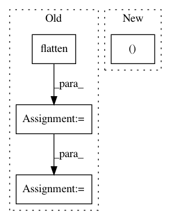

043d176e63960102db551b2b5739721c0467a43e,thinc/neural/_classes/multiheaded_attention.py,MultiHeadedAttention,begin_update,#MultiHeadedAttention#,232
Before Change
Qs, Ks, Vs = self._split_seqs(QKV, lengths)
Xattns, get_dQs_dKs_dVs = self._attend_seqs(Qs, Ks, Vs)
assert Xattns[0].shape == (lengths[0], X.shape[1]), (Xattns[0].shape, X.shape[1])
Xattn = self.ops.flatten(Xattns)
assert Xattn.shape == X.shape
Y, get_dXattn = self.get_output.begin_update(Xattn, drop=drop)
def backprop_self_attn(dY, sgd=None):
dXattn = get_dXattn(dY, sgd=sgd)
dXattns = self.ops.unflatten(dXattn, lengths)
After Change
def begin_update(self, inputs, drop=0.0):
(Qs, Ks, Vs), get_d_inputs = self.handle_inputs(inputs, drop=drop)
Y, get_dQs_dKs_dVs = self.attend((Qs, Ks, Vs), drop=drop)
outputs, get_dY = self.handle_outputs(Y, inputs)
def backprop_self_attn(d_outputs, sgd=None):
dY = get_dY(d_outputs, sgd=sgd)
In pattern: SUPERPATTERN
Frequency: 3
Non-data size: 4
Instances
Project Name: explosion/thinc
Commit Name: 043d176e63960102db551b2b5739721c0467a43e
Time: 2019-06-10
Author: honnibal+gh@gmail.com
File Name: thinc/neural/_classes/multiheaded_attention.py
Class Name: MultiHeadedAttention
Method Name: begin_update
Project Name: librosa/librosa
Commit Name: b7c2f6e9ccd65a53d8ae9aa0d3ee287ce9c93019
Time: 2014-02-07
Author: brm2132@columbia.edu
File Name: librosa/feature.py
Class Name:
Method Name: estimate_tuning
Project Name: EpistasisLab/tpot
Commit Name: ef29cd9bde8695645d63ae7f568fb298809e7b19
Time: 2018-10-15
Author: weixuanf@pennmedicine.upenn.edu
File Name: tpot/builtins/dataset_selector.py
Class Name: DatasetSelector
Method Name: fit